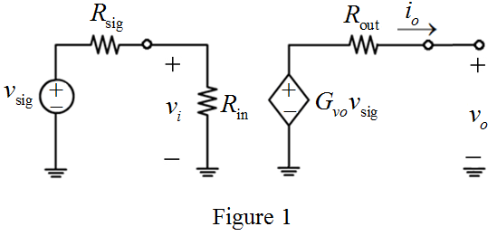

Apply voltage division rule at the input side to derive the expression for voltage,  .
.
The expression for open circuit voltage gain,  is,
is,
Refer to Figure P6.111 in the text book.
Draw the equivalent circuit after open circuiting the output terminal.

Apply voltage division rule at the input side to derive the expression for voltage, .
The expression for open circuit voltage gain, is,
Derive the expression for open circuit overall gain.
Substitute for  in the equation.
in the equation.
Substitute for  in the equation.
in the equation.
Thus, the expression for open circuit overall gain is,
Derive the expression for overall voltage gain of the amplifier.
Apply voltage division rule at the output side in Figure P6.111.
Thus, the expression for overall voltage gain of the amplifier is,
.